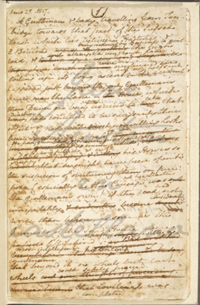
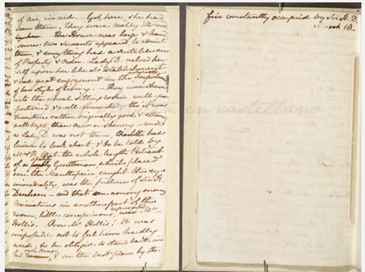
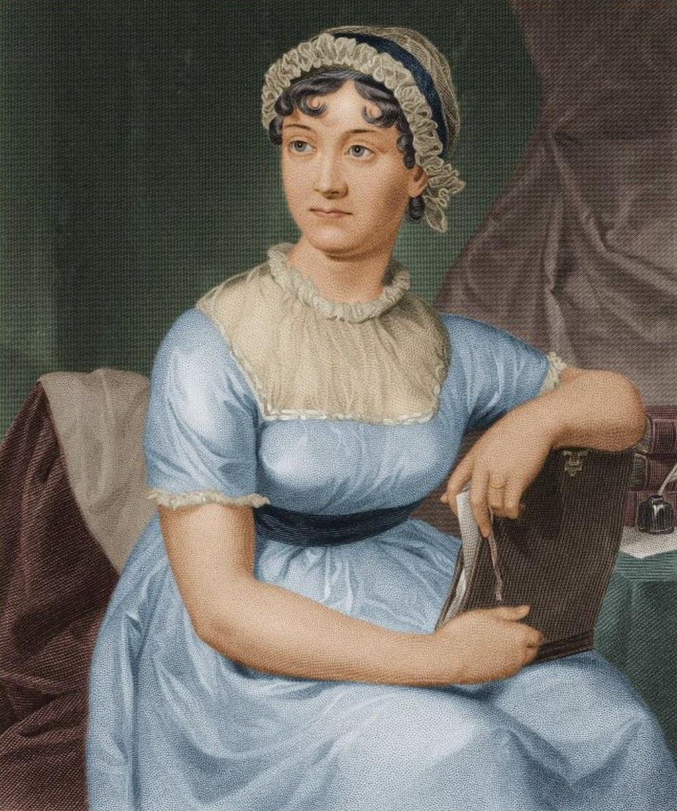
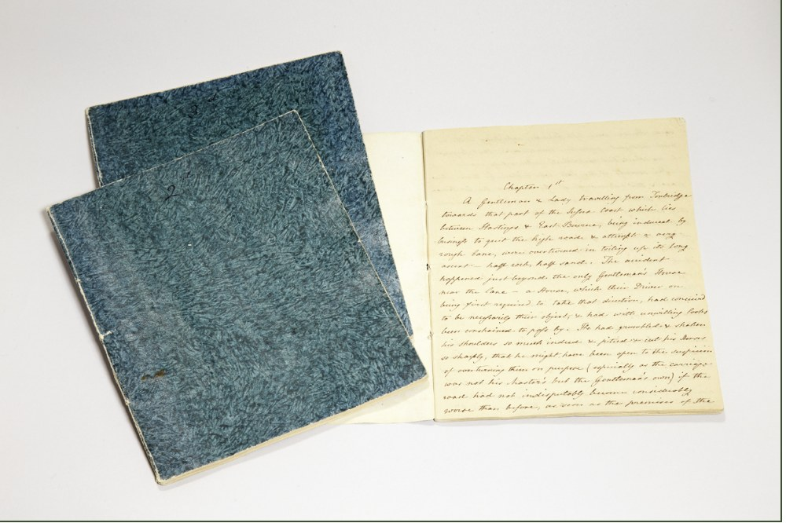
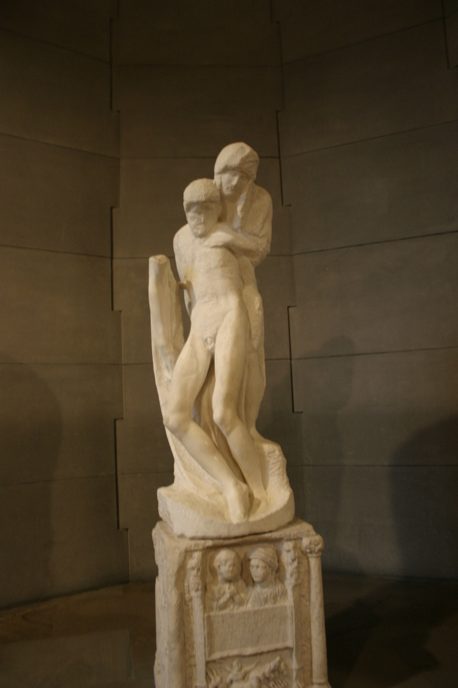
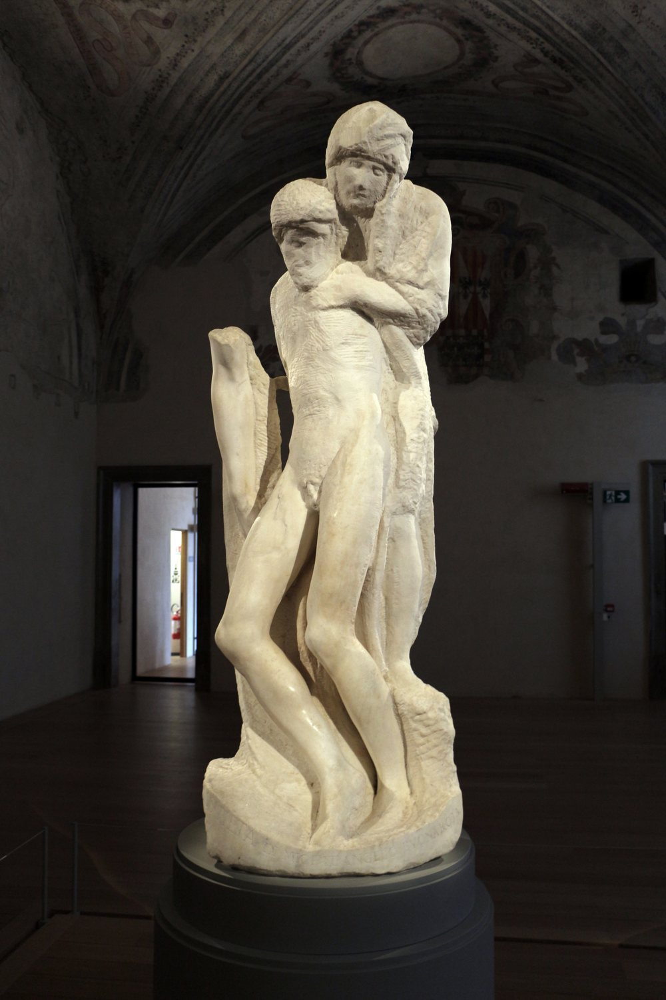
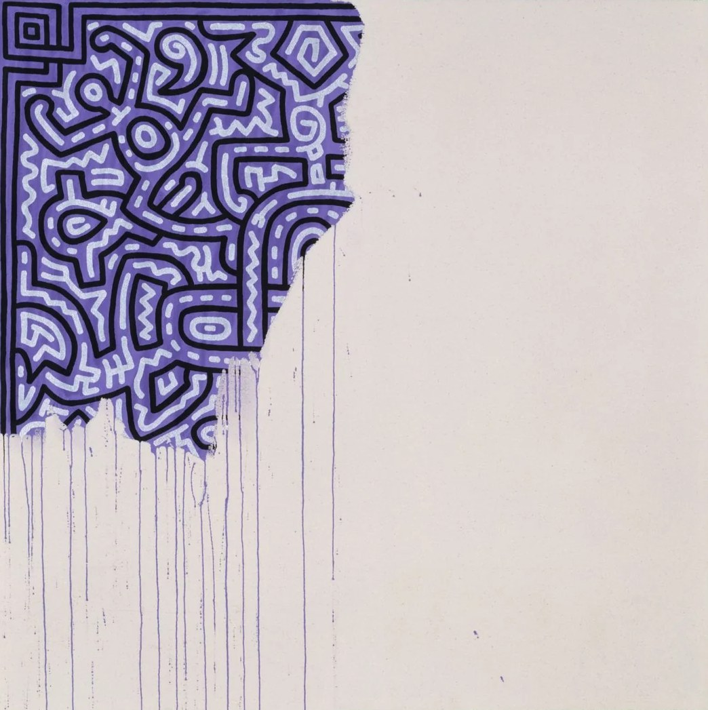

27 January 1817.
Jane Austen begins a new novel.
18 March 1817.
She writes 11½ chapters — and stops.
After that, the page is blank.
1817 · manuscript
Four months later, she was gone.
We literally hold her last written pages.
The manuscript is kept at King’s College, Cambridge, and Cambridge has digitised it — anyone can turn its pages.
Because the text has long been in the public domain, others have finished Sanditon: “Another Lady” (Marie Dobbs, 1975), Julia Barrett and many more. The cover still says “Jane Austen” in large letters.
The co-author is credited below.
After the British TV series Sanditon (2019), interest flared up again: the book is reprinted, often with a film cover.
Death stopped her. But the novel lives on — in other hands.



He changed his mind.
And changed it again.
1552–1564
KindSearch
The great Renaissance sculptor, maker of the David, spent his life in pursuit of the perfect human body. He carved this Pietà — Mary holding the dead Christ — until his last days.
He had already carved part of the figures; years later he began cutting away what he had made, to find another sculpture in the same stone.
The bodies became elongated, almost bodiless. Christ’s right arm remains from the first version.
A master of perfection ends his life with a work that looks imperfect.

Image: Unfinished Painting, 1989This painting was not cut short.
It was left empty
on purpose.
Keith Haring, 1989
Are we looking at an unfinished painting — or a finished painting about unfinishedness?
Have you left
anything unfinished?
Maybeyou should finish it.
Maybeyou have outgrown it.
Maybeit was never meant to end.
The museum doesn’t
have the answer.
It only opens the door to search.
Each story is its own kind of unfinished.
A fragment of the collection.
Opening — date to be announced
Jane Austen: portrait — 19th-century engraving; Sanditon manuscript — King’s College, Cambridge. Photos — Wikimedia Commons: Rondanini Pietà, full view — Sailko; details — Giovanni Dall’Orto. Unfinished Painting, Keith Haring, 1989 — via Wikimedia Commons. Licences as stated on each file page.